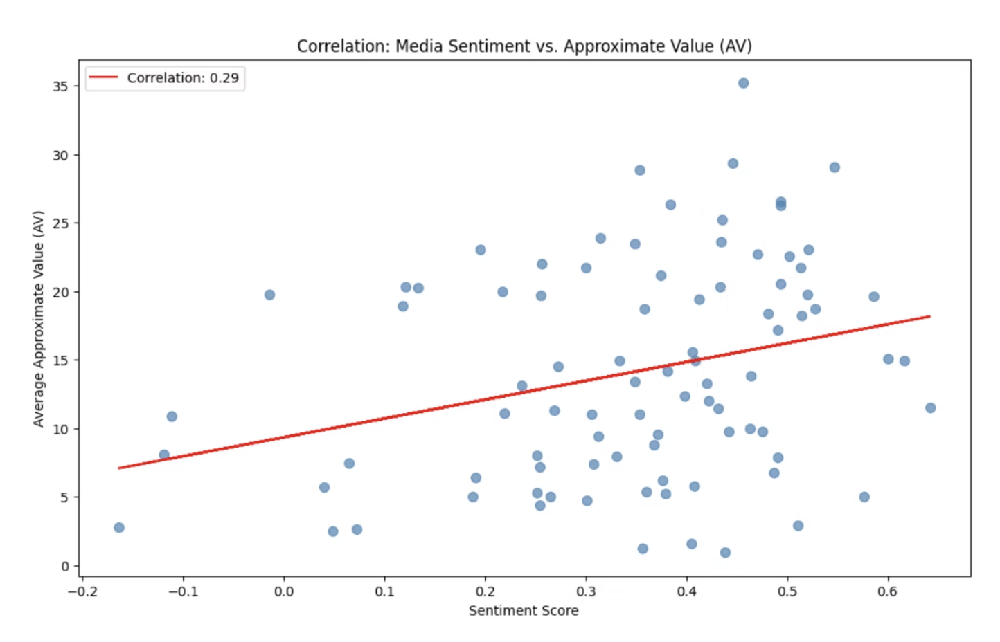
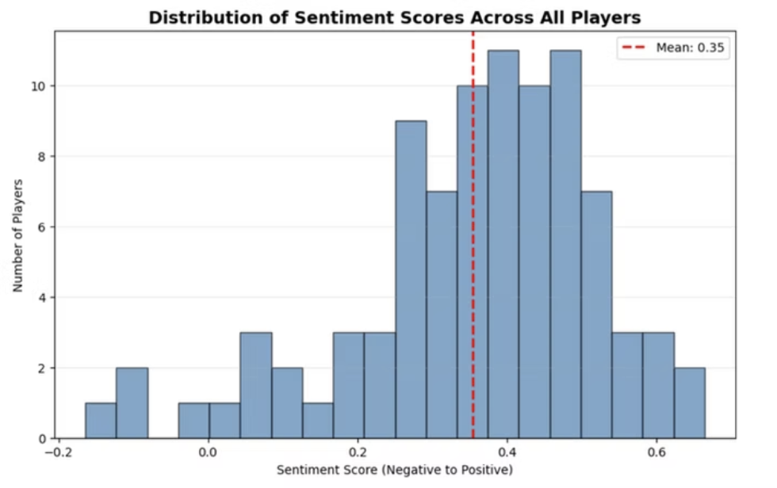
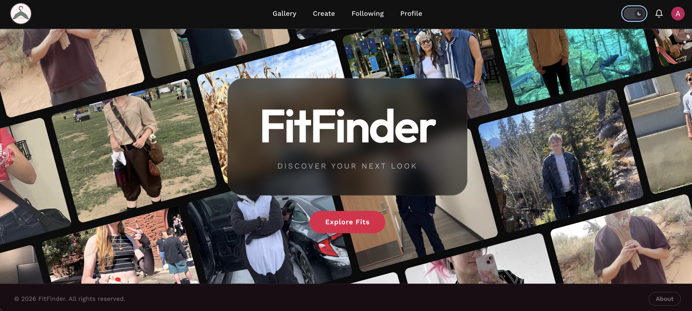
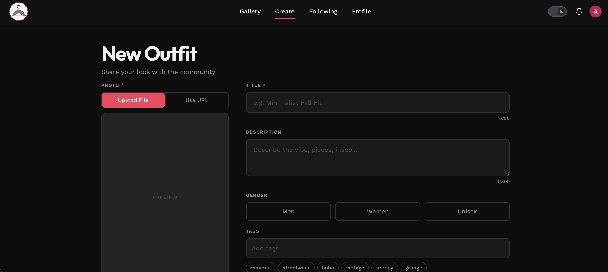
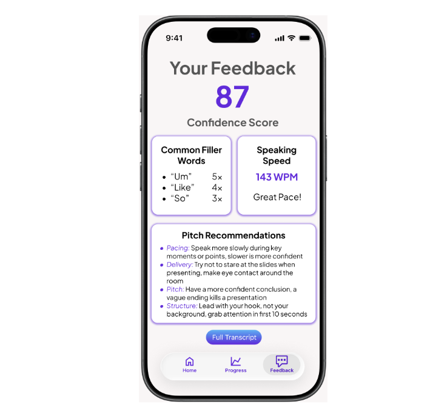

Work
My Projects
A collection of data, systems, and software work.
NFL Sentiment Analysis
Scraped over 17,000 ESPN and NFL team articles on 93 NFL players using Python and BeautifulSoup, then compared quantitative on-field performance data against qualitative media sentiment to determine whether press coverage aligns with actual results. Sentiment scored using DeBERTa.


FitFinder
A social fashion discovery app where users can browse, share, and create outfit posts. Built with React and Vite, featuring Clerk authentication, GSAP-animated navigation, and a gallery feed of community outfits.


PitchPerfect
A concept mobile app developed for an entrepreneurship class at CU Boulder. Built out a full business plan targeting university students, created a pitch deck, and presented the idea to a panel — covering market opportunity, go-to-market strategy, and a revenue model built around university partnerships.
